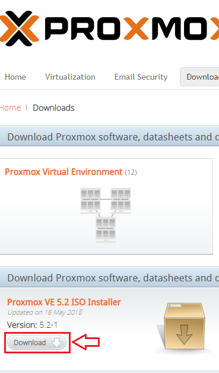

WIKIBLOG
Para hacer la instalación lo primero que tenemos que tener es la imagen .iso de la instalación. Para ello entraremos en la pagina oficial y descargaremos la ultima versión del programa. En el caso de que la maquina no la soporte, es recomendable descargar una anterior.
Ahora que tenemos el CD de instalación procedemos a arrancar la máquina.
